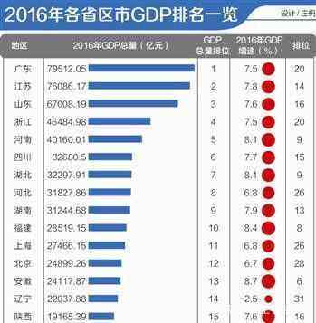

|  |
| 河南经济总量在中国排名第五,河南经济总量大得惊人，超过4万亿，超过四川、湖北、河北、福建，是陕西2倍以上. 河南早已不再是落后的农业社会,2016年，河南生产总值(GDP)40160.01亿元。其中，第一产业增加值4286.30亿元，第二产业增加值19055.44亿元， 第三产业增加值16818.27亿元。三次产业结构10.7:47.4:41.9，农业占比比较小。 |
| 河南各市经济实力并不弱 |
| 郑州经济总量近8000亿元，相比同为省会城市的西安、合肥6200多亿元，高出一大截。 第二位城市洛阳，经济总量跟广西南宁相当;第三位城市南阳，经济总量跟贵州贵阳相当。 河南十多个城市整体结构比较合理。郑州之后，有洛阳、南阳两个3000亿元城市;许昌、周口等6个2000亿元城市; 商丘、驻马店等7个1000亿元城市;整体结构合理，并且后来者还有很大发展空间。2016年河南经济增速高达8.1%，2017年上半年高达8.2%，对比其他省市、全国平均水平，这是让人惊异的数据。 |
相信未来的河南会更好!